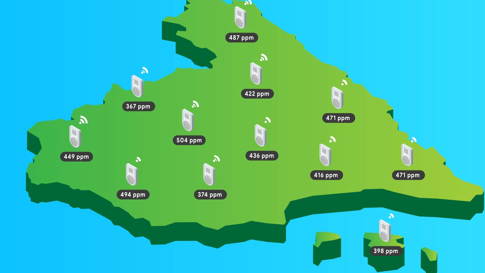

The problem¶
Air pollution consists of chemicals or particles in the atmosphere, that pose serious health and environmental threats. But what causes air pollution? And what does it mean for our planet? Some air pollution comes from natural sources, like volcanic eruptions, wild fires, or allergens.
But most air pollution results from human activities such as energy used in agriculture.
There are different types of human-made air pollution. When we burn fossil fuels to produce energy they release greenhouse gasses into the air. This emissions such as carbon dioxide, methane, nitrous oxide and fluorinated gasses trap heat from the sun in earth’s atmosphere, leading to a rise in global temperatures and contributing to respiratory disease from smog and air pollution.
The solution¶
In order to contribute to the solution, our team decided to develop a greenhouse gas monitoring IoT system which would be of great help to governments to collect accurate statistical data on pollution from the cities in real time.
This system would consist of a network of IoT devices equipped with greenhouse gas sensors connected to the Internet and distributed throughout the cities. This system would take advantage of the OneM2M service layer to communicate with a central server, which would receive and store the data.
In order to visualize the data, there will be a web-app that will fetch the data from the server and generate a heatmap of gas levels.